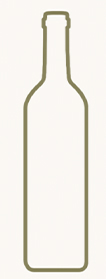

Den rette temperatur fremhæver vinens sjæl – lær hvordan du serverer den perfekt.
Den rette temperatur fremhæver vinens sjæl
Serverings temperatur
For at få det bedste ud af din hvidvin, er serveringstemperaturen afgørende. En vin, der er for kold, skjuler sine aromaer – og en for varm vin kan virke flad og tung.

Let, frisk hvidvin
6–8 °C
Fyldig og fadlagret hvidvin
10–12 °C
Tips:
Stil flasken i køleskabet ca. 2 timer før servering – eller 20 minutter i isvand, hvis det skal gå hurtigt.